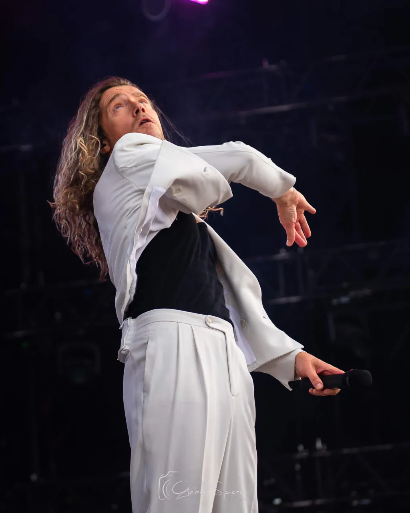
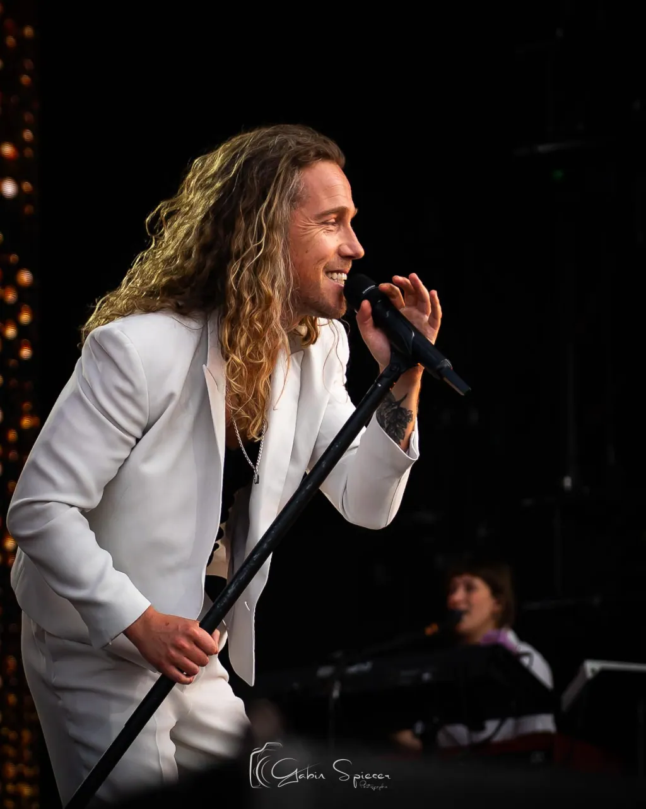
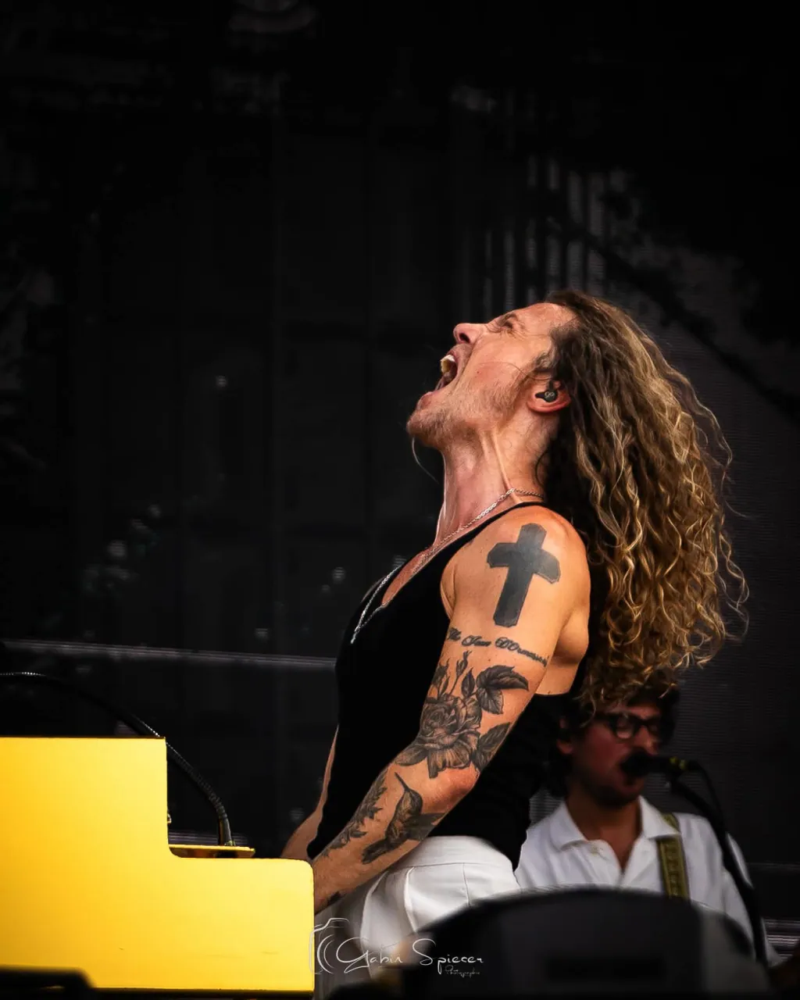
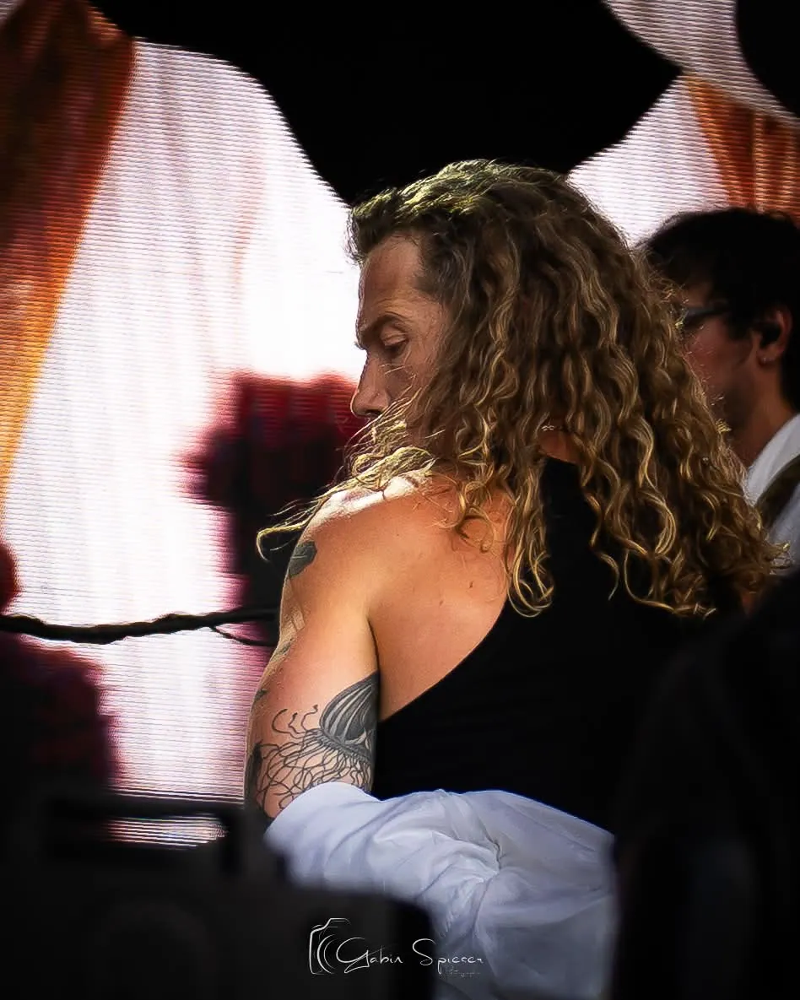
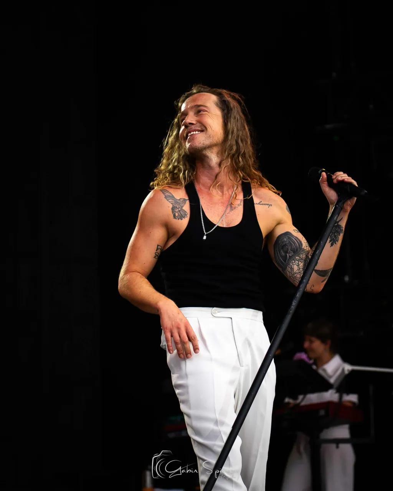
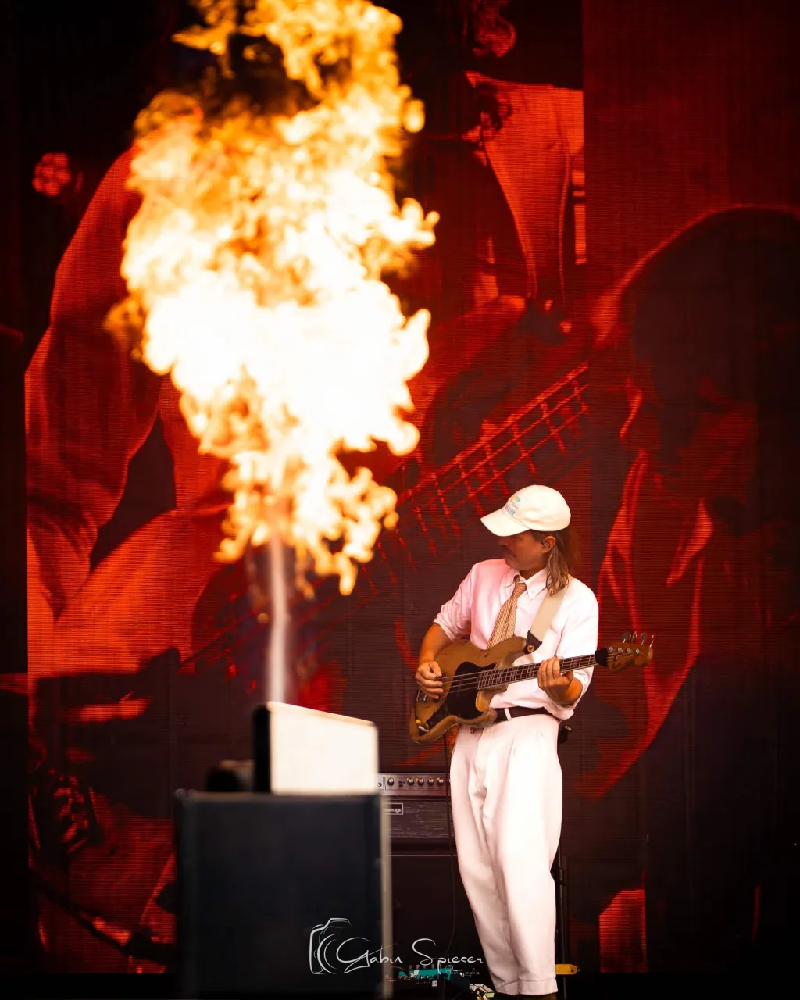

Série · 18 photographies
Julien Doré
Costume blanc, piano jaune
Foire en Scène · Châlons-en-Champagne · 2026
Entrer dans la série
Un costume blanc taillé pour attraper la lumière, et il l’attrape toute. Face à la foule, d’abord. Puis le piano jaune, et la voix qui change de poids. À la fin, une serviette autour du cou : la preuve qu’il n’a rien gardé pour lui.
Costume blanc



Cambré en arrière, le micro à bout de bras. Sous les projecteurs, le blanc du costume brûle.

Au piano



La bouche grande ouverte au-dessus des touches jaunes. L’image est muette, et pourtant on l’entend.
De près

De dos, courbé sur les touches, face à l’écran géant. Le monde entier tient dans ce piano.



Les flammes

Final

Crédits
- Artiste
- Julien Doré
- Série
- Costume blanc, piano jaune
- Événement
- Foire en Scène
- Lieu
- Châlons-en-Champagne
- Date
- 2026
- Photographies
- Gabin Spieser · 18 images
Publier une image ? Précisez la photographie et le support envisagés. Les droits d’utilisation et le crédit du photographe se définissent ensemble avant publication. Parlons de votre projet.